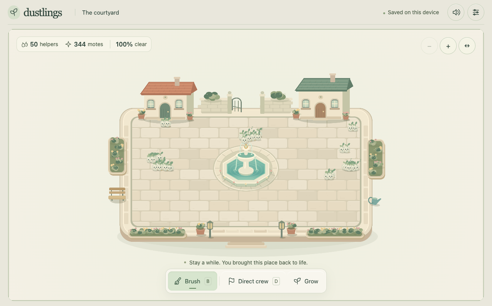

Isolated experiment, not integrated or human approved. Each still uses the same paused QA fixture at1280×796 CSS pixels. Movement recordings resume normal simulation from that fixture; they are not natural playthroughs. Source mechanics, geometry and audio are unchanged.
Findings, exact changes and limits · Corrected light profile · Framing checks
Baseline · Restored fixture. Open the image for its original1280×796 pixels.

Full-interface automated recordings, about9–10 seconds with8 seconds of normal simulation. No audio track. Recording compression can soften colors; use original PNGs for light comparison.
These standalone copies open offline. For consistent comparisons, import the same 50-helper save or completed save from Settings.
Play baseline · Play light candidate · Play light + closer framing
The rejected first experiment made paving seams too dominant: retained negative result. Final candidate reduces that contrast. Human preference, comfort and benchmark presentation remain untested.